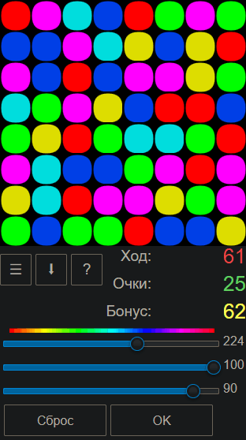

SpiderBasic, Андроид
Balloons
Назначение
Игра собери шарики в одну линию.

Взаимосвязанные
BalloonsОписание
Собрать в одну линию горизонтальную или вертикальную не менее 3-х шариков, тогда они будут заменены но новые случайные шарики. Каждый ход вычитает -1, поэтому за один ход должна быть собрана хотя бы одна линия. Если собрана линия из 3-х шаров это не даёт очки, но если за раз уничтожается 2 линии или более 3-х шаров, то даются очки по числу дополнительных шаров. Если после появления новых случайных шариков собирается линия, она будет уничтожена и очки идут в бонус. Перекрёстные линии с общим шариком удаляются как 2 линии. "Счёт" отражает результат работы игрока, а бонусы это случайные совпадения не зависящие от игрока. Ход считается когда произошёл обмен шариками. Если кликнуть на тот же шарик, то отмена выбора. Если кликнуть на другой, который невозможно обменять, то выбор перемещается на него. Подсказка -1 к очкам, при условии если найдено, а если не найдено, то просто сообщает что не найдено, либо перемешать, либо делать пустые ходы.